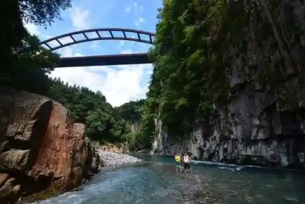
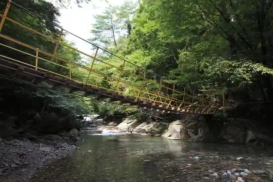
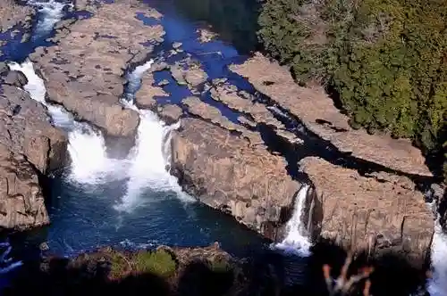
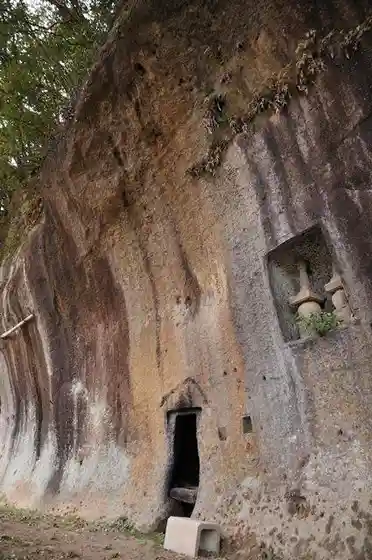

Tai Sako Kyo (Taizakokyo)
Bungoono, Oita · 0974-27-4215 · Official / source link

Kawakami Gorge
Bungoono, Oita · 0974-27-4215 · Official / source link

Komori Falls (Komori no Taki)
Bungoono, Oita · 0974-27-4215 · Official / source link

Tsuji Kawaraishi Furo (Tsujigawaraishiburo)
Bungoono, Oita · 0974-27-4215 · Official / source link

Osako Magai Hotoke
Bungoono, Oita · 0974-27-4215 · Official / source link
Shiba Kita Kumano Sha
Bungoono, Oita · 0974-27-4215 · Official / source link
Miyasako Toseki Hotoke
Bungoono, Oita · 0974-27-4215 · Official / source link
Ogata Miyasako Saiseki Hotoke
Bungoono, Oita · 0974-27-4215 · Official / source link
Tedori Kani Ko (Tedorigando)
Bungoono, Oita · 0974-27-4215 · Official / source link
Sobo Katamukiyama Kei Yunesukoeko Park Ni Eraba Reta Seibutsu no Hoko
Bungoono, Oita · 0974-27-4215 · Official / source link
Inukai Minato Ato (Inukaikoato)
Bungoono, Oita · 0974-27-4215 · Official / source link
Iwato no Keikan (Iwado no Keikan)
Bungoono, Oita · 0974-27-4215 · Official / source link
Deai Hashi Todoroki Hashi (Deaibashitodorobashi)
Bungoono, Oita · 0974-27-4215 · Official / source link
Fuko Tera Fuko Tera Magai Hotoke (Fukoji Fukojimagaibutsu)
Bungoono, Oita · 0974-27-4215 · Official / source link
Harajiri (Harajiri) Falls Sobo Kei Okuzure Yunesukoeko Park no Midokoro
Bungoono, Oita · 0974-42-2137 · Official / source link
Inukai Sekibutsu
Bungoono, Oita · 0974-27-4215 · Official / source link
Rojji Kiyokawa
Bungoono, Oita · 0974-35-3601 · Official / source link
Sugao Magai Hotoke (Sugaomagaibutsu)
Bungoono, Oita · 0974-27-4215 · Official / source link
Sobo Kei Okuzure Yunesukoeko Park no Midokoro Takeo Sha (Takeosha)
Bungoono, Oita · 0974-22-1001 · Official / source link
Niji Kan Hashi (Kokankyo)
Bungoono, Oita · 0974-27-4215 · Official / source link
Kami Kaku Tera (Jinkakuji)
Bungoono, Oita · 0974-27-4215 · Official / source link
Hakusan Gorge (Hakusankeikoku)
Bungoono, Oita · 0974-27-4215 · Official / source link
Kyushu Orure Oku Bungo Kosu
Bungoono, Oita · 0974-63-0585 · Official / source link
Kyushu Orure
Bungoono, Oita · 0972-23-3400 · Official / source link
Ko Nai Ko no Kei Ono Kawa Gamotarashita Yutaka Na Daichi
Bungoono, Oita · 0974-27-4215 · Official / source link
Chin Da Falls (Chinda no Taki)
Bungoono, Oita · 0974-27-4215 · Official / source link
Uchiyama Kannon (Hasu Shiro Tera)
Bungoono, Oita · 0974-22-0598 · Official / source link
Ogata I Michi (Ogatairo)
Bungoono, Oita · 0974-27-4215 · Official / source link
Eboshi Park
Bungoono, Oita · 0974-27-4215 · Official / source link
Shibayama Hachiman Sha
Bungoono, Oita · 0974-37-2111 · Official / source link
Ishi Gen Teraishi Hotoke (Dozono Magai Hotoke)
Bungoono, Oita · 0974-27-4215 · Official / source link
Roku Jimei Go (Rokujimyogo)
Bungoono, Oita · 0974-27-4215 · Official / source link
Taika Goju Tani Magai Hotoke (Taikagojutanimagaibutsu)
Bungoono, Oita · 0974-27-4215 · Official / source link
Imayama Magai Hotoke (Taika Setsu Ono Tani Magai Hotoke)
Bungoono, Oita · 0974-27-4215 · Official / source link
Jiku Maru Magai Hotoke
Bungoono, Oita · 0974-27-4215 · Official / source link
Ogose Zuiko Iori Magai Hotoke (Koshiozuikoanmagaibutsu)
Bungoono, Oita · 0974-27-4215 · Official / source link
Owatari Sekizo Jizo Bosatsu Zo (Owatarisekizojizobosatsuzo)
Bungoono, Oita · 0974-27-4215 · Official / source link
Fudogafuchi Magai Hotoke (Fudogabuchimagaibutsu)
Bungoono, Oita · 0974-27-4215 · Official / source link
Ochimizu Magai Hotoke
Bungoono, Oita · 0974-27-4215 · Official / source link
Kinoshita Magai Hotoke
Bungoono, Oita · 0974-27-4215 · Official / source link
Ogawa no Magai Hotoke (Nashi Sho Magai Hotoke)
Bungoono, Oita · 0974-27-4215 · Official / source link
Ta Village Magai Hotoke
Bungoono, Oita · 0974-27-4215 · Official / source link
Inukai Minato (Hi no Michi) Naminori Ri Jizo
Bungoono, Oita · 0974-27-4215 · Official / source link
Ontake Yama (Ondakesan)
Bungoono, Oita · 0974-27-4215 · Official / source link
Yosaku Park (Yujakukoen)
Bungoono, Oita · 0974-27-4215 · Official / source link
Inazumi Hakusan Kawa Kyanpu Village
Bungoono, Oita · 0974-26-2468 · Official / source link
Asakura Fumio Memorial Museum
Bungoono, Oita · 0974-72-1300 · Official / source link
Bungoono Museum
Bungoono, Oita · 0974-24-0040 · Official / source link
Hosho Tera
Bungoono, Oita · 0974-35-2559 · Official / source link
Roadside Station Harajiri no Taki Shuhen
Bungoono, Oita · 0974-42-2111 · Official / source link
Izumi Suichu Limestone Cave
Bungoono, Oita · 0974-26-2468 · Official / source link
Fujii Jozo FUJII BREWERY
Bungoono, Oita · 0974-37-2016 · Official / source link
Mie Kantorii Club
Bungoono, Oita · 0974-22-3030 · Official / source link
Fureai. Manabi no Mori Bungoono Museum
Bungoono, Oita · 0974-24-0040 · Official / source link
Roadside Station
Bungoono, Oita · 0974-35-2117 · Official / source link
Izumi Suichu Limestone Cave (Tentosauna)
Bungoono, Oita · 0974-26-2468 · Official / source link
Sato no Eki Yasuragi Kosaten
Bungoono, Oita · 0974-74-2020 · Official / source link
Riba Park Inukai
Bungoono, Oita · 097-578-1189 · Official / source link
Oita Bungoono Jio Park Yomigaeru Daichi no Mo no Gatari
Bungoono, Oita · 0974-22-1001 · Official / source link
Roadside Station Asaji
Bungoono, Oita · 0974-64-1210 · Official / source link
Roadside Station Harajiri Falls
Bungoono, Oita · 0974-42-4140 · Official / source link
Kagura Hall
Bungoono, Oita · 0974-35-2372 · Official / source link
Roadside Station O no
Bungoono, Oita · 0974-34-3231 · Official / source link
Roadside Station Mie
Bungoono, Oita · 0974-24-0010 · Official / source link
Sato no Tabi Mo no Gatari Kan Assoka !
Bungoono, Oita · 0974-27-4215 · Official / source link
Bungoono Yakusho
Bungoono, Oita · 0974-22-1001 · Official / source link